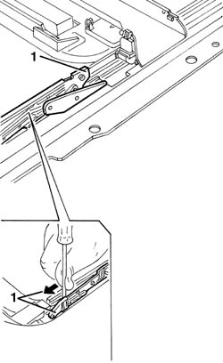

7030B54 SUN ROOF (assembly) - Alignment and Positioning
- Path
- Procedures > 70 FITTINGS > 7030 SUN ROOF AND HOOD > 7030B SLIDING ROOF > 7030B54 SUN ROOF (assembly) - Alignment and Positioning
- Kind
- repair procedure (removal / refitting; the operation number is the code)
- Applies to
- all engines; all production periods
- Interactive page
- https://sloeber94.github.io/elrnDB-lThss/en/#/126569
Applies to: all engines; all production periods
- Disconnect the negative battery terminal.
See in Op. 7030B18 Sun roof GLASS PANEL - R.R.
See in Op. 7030B64 Sun roof control SWITCH - R.R.
See in Op. 7040E50 Front MODULAR COURTESY LIGHT UNIT - R.R.
See in Op. 7040H30 FRONT PILLAR TRIM (one), left or right - R.R.
See in Op. 7065C30 interior l/h or r/h grab handle (one) - r+r
See in Op. 7065C34 SUN VISOR (one) left or right - R.R.
See in Op. 7030B34 Sun roof housing DECORATIVE TRIM - R.R.
See in Op. 7040E56 Support for front MODULAR COURTESY LIGHT UNIT - R.R. with courtesy light removed
See in Op. 7030B70 Sun roof movement MOTOR - R.R.
1. Manually place both slides in the spoiler position in the direction shown by the arrow.

Applies to: all engines; all production periods
See in Op. 7030B70 Sun roof movement MOTOR - R.R.
See in Op. 7040E56 Support for front MODULAR COURTESY LIGHT UNIT - R.R. with courtesy light removed
See in Op. 7030B34 Sun roof housing DECORATIVE TRIM - R.R.
See in Op. 7065C34 SUN VISOR (one) left or right - R.R.
See in Op. 7065C30 interior l/h or r/h grab handle (one) - r+r
See in Op. 7040H30 FRONT PILLAR TRIM (one), left or right - R.R.
See in Op. 7040E50 Front MODULAR COURTESY LIGHT UNIT - R.R.
See in Op. 7030B64 Sun roof control SWITCH - R.R.
- Connect the negative battery terminal.
Topics linked from this page (9)
- 7030B18 Sun roof GLASS PANEL - R.R.
- 7030B34 Sun roof housing DECORATIVE TRIM - R.R.
- 7030B64 Sun roof control SWITCH - R.R.
- 7030B70 Sun roof movement MOTOR - R.R.
- 7040E50 Front MODULAR COURTESY LIGHT UNIT - R.R.
- 7040E56 Support for front MODULAR COURTESY LIGHT UNIT - R.R. with courtesy light removed
- 7040H30 FRONT PILLAR TRIM (one), left or right - R.R.
- 7065C30 interior l/h or r/h grab handle (one) - r+r
- 7065C34 SUN VISOR (one) left or right - R.R.